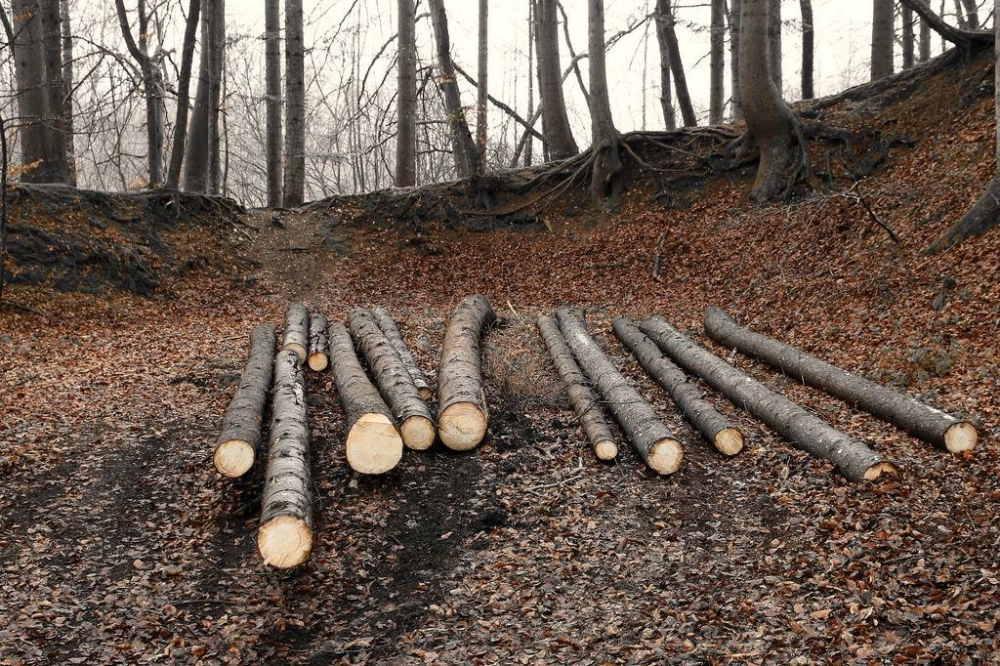
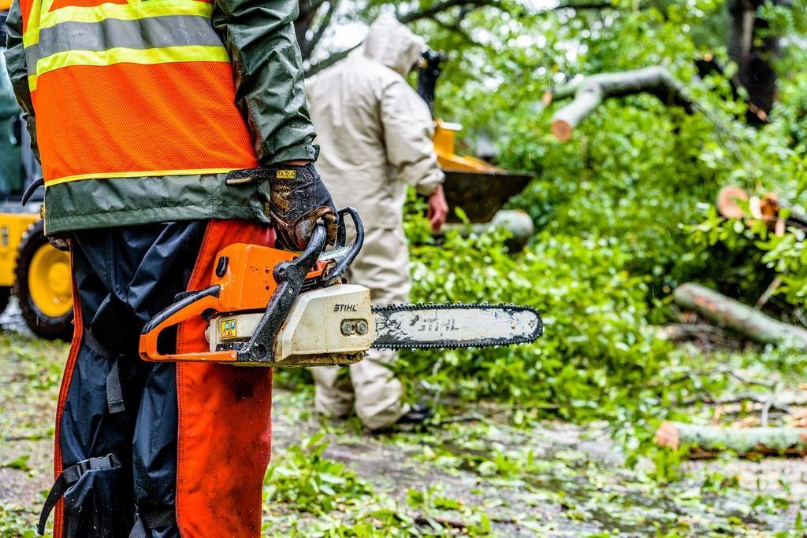
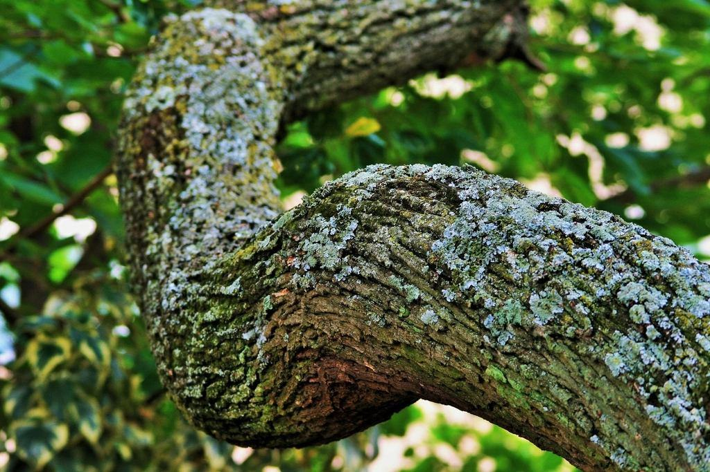
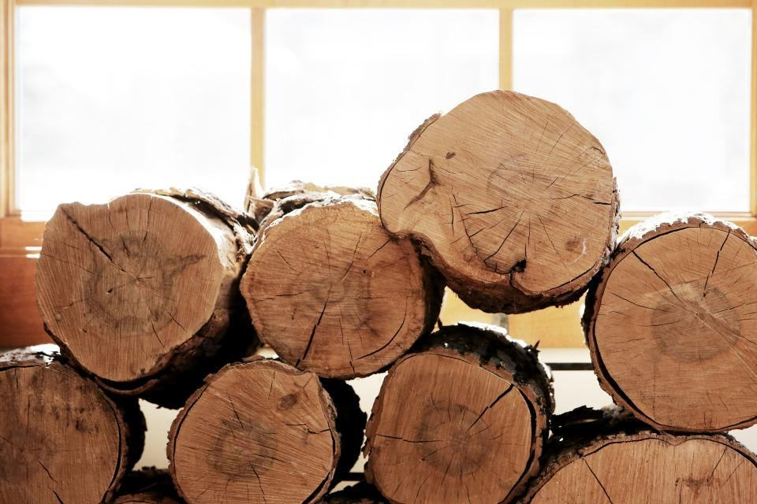
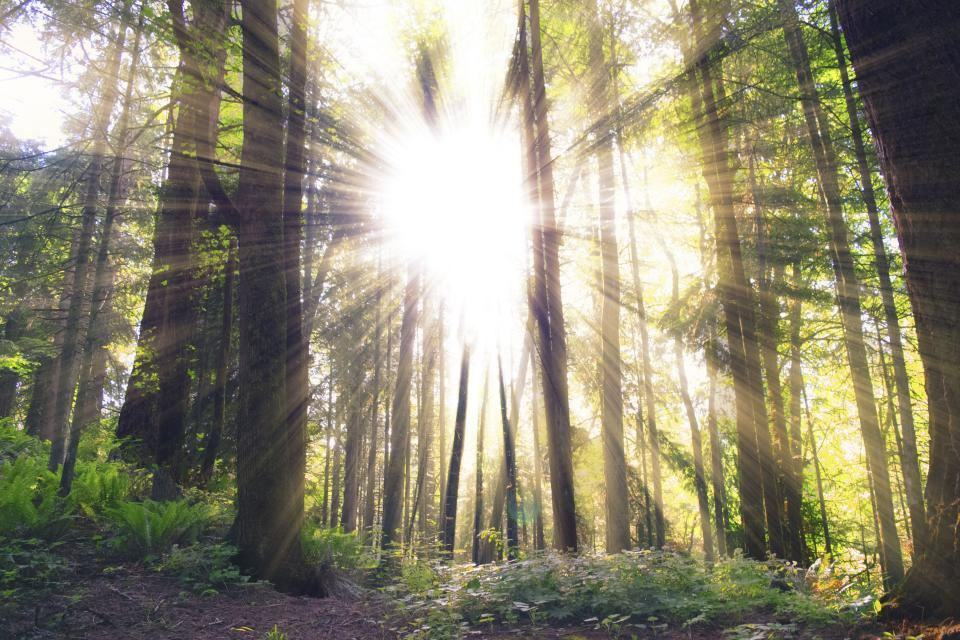
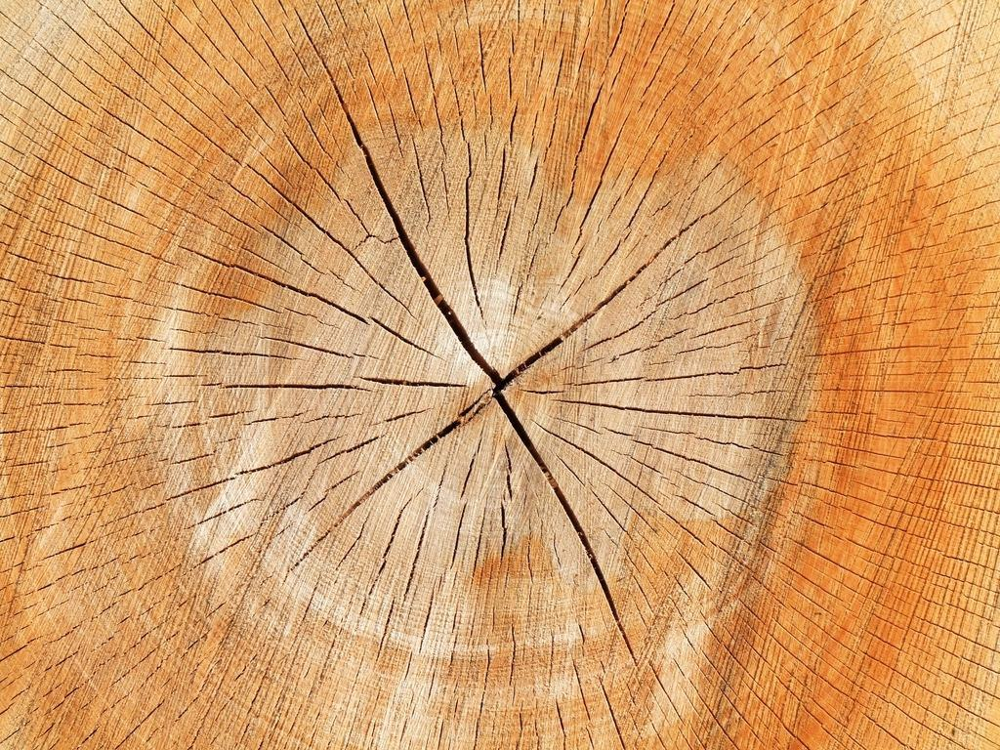
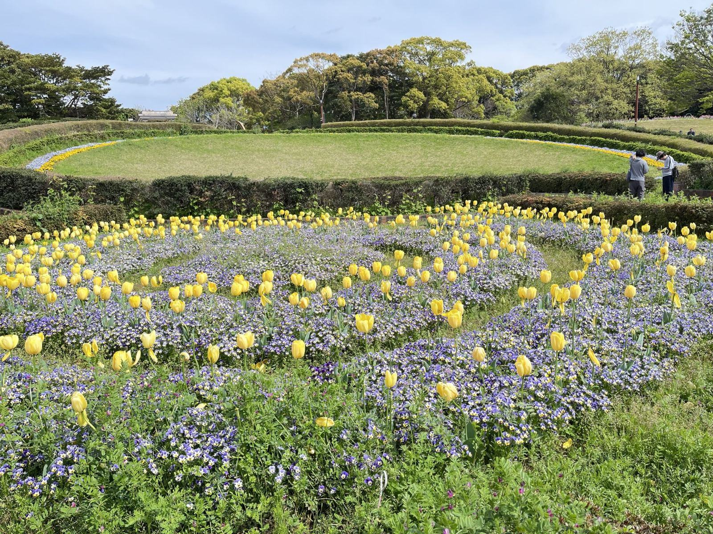
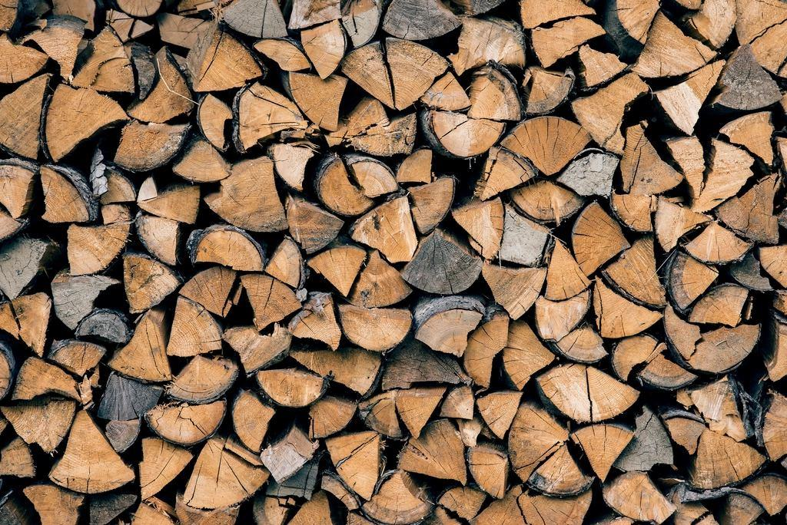

Tjänster
Fjällnära trädvård skiljer sig från den i stan. Snölasten kan bli 300 kilo per kvadratmeter krona, tjälen sitter kvar till juni och många tomter saknar plogad väg på vintern. Vi planerar därför de flesta fällningar till september–november och tar akuta snöbrott med skoter.
Vad behöver stugan?

Fritidshus och fjällstugor
Över hälften av våra kunder bor i Stockholm, Göteborg eller Trondheim. Vi besiktar via bild och karta, lämnar pris på mejl och gör jobbet medan stugan står tom.
Nyckel kan lämnas i nyckelskåp eller hos stugbyns uthyrning.

Utsikt mot fjället
Den som köpte stugan för utsikten mot Åreskutan ser ofta bara granar tjugo år senare. Vi tar bort utvalda träd och höjer kronorna på resten, så att tomten behåller lä och skydd.
Utsiktsröjning kräver ibland samråd med kommunen inom detaljplan – det sköter vi.

Vintertjänst
Blöt snö i november och december knäcker toppar på gran och tall. Vi har jour under snöovädersvarningar och tar oss fram där plogbilen inte går.
Kunder med säsongsavtal får förtur och fast jourtaxa.

Gårdar i dalen
Gamla jämtgårdar i Mörsil, Undersåker och Hallen har ofta stora rönnar, häggar och björkar intill husen. Vi beskär och fäller med samma omsorg som på fjället.
Veden kapas i 30 cm och staplas i vedboden om du vill.
Så sköter vi stugan när du inte är där
- 1

Bilder och karta
Skicka foton och fastighetsbeteckning. Ofta räcker det för ett preliminärt pris.
- 2

Besök på plats
Vi åker förbi när vi ändå är i närheten och märker träden med band. Du godkänner urvalet på bild.
- 3

Jobbet
Vi arbetar helst på barmark med frusen mark som skonar mossa och lyng. Riset flisas och sprids eller körs bort.
- 4

Rapport
Inom ett dygn får du en fotorapport och faktura med RUT-avdraget gjort.
Behöriga i skog, fjäll och träd
- European Tree WorkerIda är ETW-certifierad sedan 2018 och omcertifierad 2023.
- Svensk ArboristexamenTre av fyra har arboristexamen, Tove läser den på distans.
- Motorsågskörkort och terrängMotorsågskörkort AB samt förarbevis för terrängskoter.
- Ansvarsförsäkring 10 MkrGäller även när vi arbetar i obebodda fritidshus.